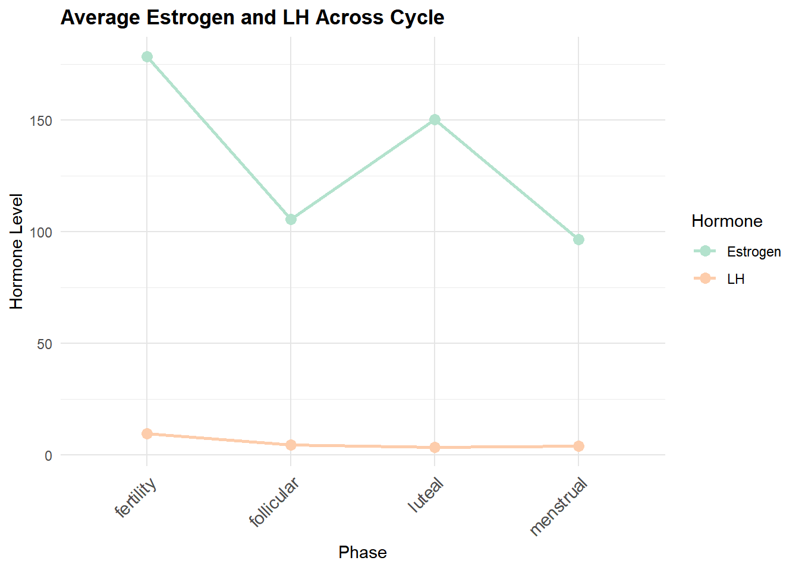
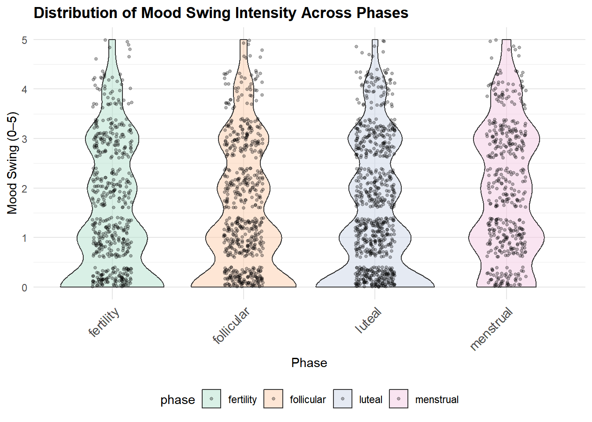
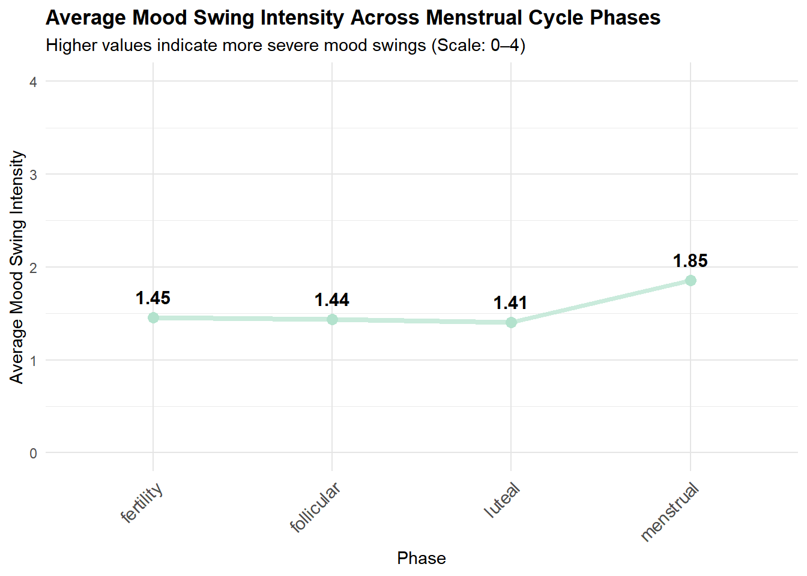
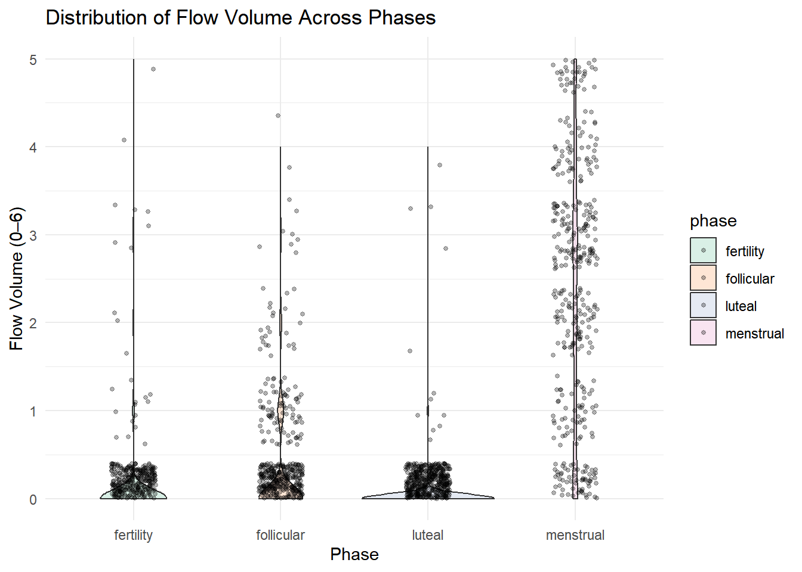
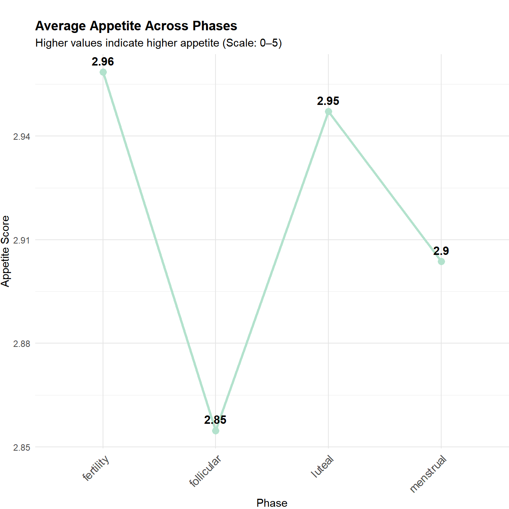
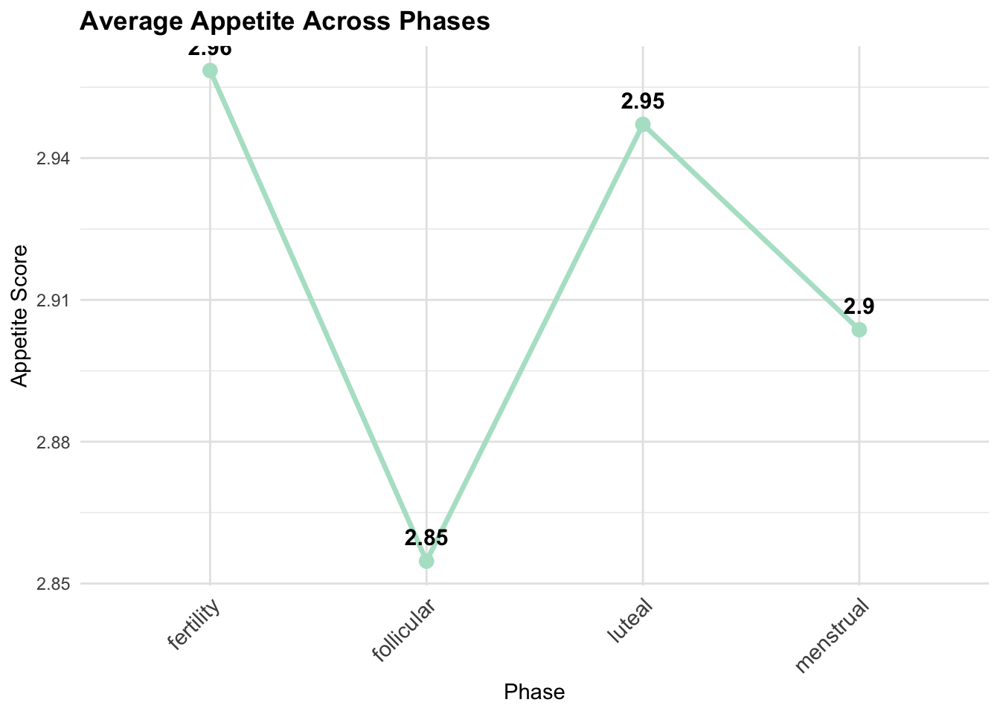

We want to examine average estrogen and LH levels across menstrual cycle phases to see if hormonal patterns match biological expectations
## Warning: Using `size` aesthetic for lines was deprecated in ggplot2 3.4.0.
## ℹ Please use `linewidth` instead.
## This warning is displayed once every 8 hours.
## Call `lifecycle::last_lifecycle_warnings()` to see where this warning was generated. Estrogen levels are highest in the Fertility (ovulatory) phase, second highest in Luteal, and relatively low in Menstrual, gradually rising from Follicular to Luteal. LH is much lower than estrogen overall, peaking sharply in Fertility and remaining low in the other phases.
Moodswing Distribution Across Phases
Using violin plots to assess whether menstrual cycle hases influence mood swing intensity.
## Warning: Removed 467 rows containing missing values or values outside the scale
## range (`geom_point()`). Violin plots show substantial inter-individual variability. Menstrual phase has the highest mood swing intensity (right-skewed distribution, peak around 1.85), while Luteal phase shows lower values with a wider base (more individuals with low mood swing).
Average Mood Swing Across Phases To visualize general trends, we should summarize the average mood swing intensity across phases. 
Average mood swing is highest in Menstrual phase (1.85), lowest in Luteal phase (1.41), with intermediate levels in follicular and fertility phases.
Mood SwingLinear Mixed Models
Test whether mood swing and fatigue differ by menstrual phase, accounting for repeated measures.
Mood swings are lowest near ovulation, slightly higher in Luteal, and peak during Menstrual phase. Fatigue shows a similar pattern: lowest near ovulation, increasing through Luteal, highest during Menstrual phase. Random effects indicate that some individuals are chronically more fatigued or mood-sensitive than others, while residual variance captures day-to-day variability.
Flow Volume Distribution Across Phases
To assess flow volume distribution patterns, we visualize flow volume variation across phases with violin plots.
## Warning: Removed 24 rows containing non-finite outside the scale range
## (`stat_ydensity()`).## Warning: Removed 1145 rows containing missing values or values outside the
## scale range (`geom_point()`). Luteal phase shows a right-skewed distribution, indicating most low-flow observations but a few high-flow days. Menstrual phase is narrow and tall, indicating consistently higher flow intensity.
Average Flow Volume Across Phases
Summarize average flow volume to observe general trends across the menstrual cycle.  Menstrual phase has the highest average flow (2.38), luteal is lowest (0.03), fertility is 0.07, and follicular is 0.23.
Linear Mixed Model
Flow volume vs lh
Observing in exploratory scatter plots that self-reported flow volume scores appeared to follow an inverse pattern relative to luteinizing hormone (LH) levels, I conducted a linear mixed model analysis to formally test this visual hypothesis. The model was used to determine if this apparent inverse relationship was statistically significant when rigorously accounting for the repeated measures within each individual participant.
flow_volume_model <- lmer(flow_volume_score ~ lh + (1 | id), data = hormone_symptoms)
flow_table <- create_model_table(flow_volume_model, "Flow Volume ~ LH")
flow_table## # A tibble: 2 × 8
## model term estimate std.error conf.low conf.high p.value significant
## <chr> <chr> <dbl> <dbl> <dbl> <dbl> <dbl> <chr>
## 1 Flow Volume … (Int… 0.641 0.0766 0.486 0.797 7.88e-10 Yes
## 2 Flow Volume … lh -0.0114 0.00353 -0.0183 -0.00445 1.29e- 3 YesBased on the linear mixed model, a significant but modest relationship exists between luteinizing hormone (LH) levels and perceived menstrual flow volume. For every one-unit increase in LH, the flow volume score is estimated to decrease by -0.01138 points (p = 0.00129). While statistically significant, this effect is small in magnitude. The model indicates substantial individual differences, as the variation in scores within a single person over time (residual SD = 1.19) is much greater than the average differences between individuals’ baselines (intercept SD = 0.45). Therefore, while LH shows a significant inverse association with flow volume, within-person biological and measurement variability remains the dominant feature of the data.
Average Appetite Across Phases
Summarize average appetite to observe general trends across the menstrual cycle.  Appetite is highest in Fertility (2.96), lowest in Follicular (2.85), Luteal 2.95, Menstrual 2.90.
Linear Mixed Model: Appetite vs Estrogen Explore the relationship between estrogen levels and appetite scores, accounting for repeated measures.
## # A tibble: 2 × 8
## model term estimate std.error conf.low conf.high p.value significant
## <chr> <chr> <dbl> <dbl> <dbl> <dbl> <dbl> <chr>
## 1 Appetite ~ E… (Int… 2.89 0.0694 2.75e+0 3.03 1.16e-39 Yes
## 2 Appetite ~ E… estr… 0.000129 0.000149 -1.63e-4 0.000421 3.85e- 1 NoRandom intercept variance (0.1746) indicates participant-specific baseline appetite differences. The fixed effect of estrogen is small (0.00013 per unit) and not significant (t = 0.869).
limitation:
Several limitations should be considered when interpreting these findings. First, the dataset relies on self-reported symptom scores, which may be subject to recall bias or subjective interpretation. Second, while repeated measures are accounted for using linear mixed models, the sample size for some phases may be limited, reducing statistical power to detect subtle effects. Finally, other biological and lifestyle factors—such as stress, sleep, diet, and physical activity—were not controlled for, which could influence mood, appetite, and fatigue. Therefore, the results should be interpreted as suggestive of phase-related trends rather than definitive causal effects.